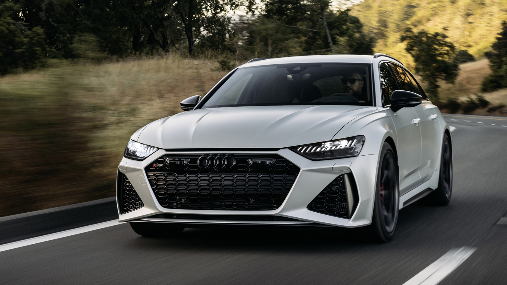
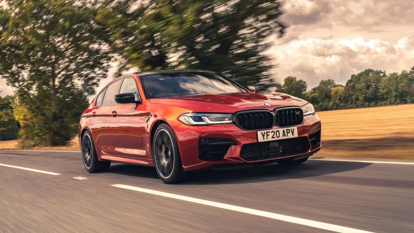

Mercedes AMG GT
Mercedes-AMG GT to dynamiczny i wyrafinowany samochód sportowy,
zaprojektowany z myślą o wydajności i luksusie. Zasila go potężny
silnik V8, który dostarcza imponującą moc, zapewniając szybkie
przyspieszenia i emocjonujące doznania podczas jazdy. Jego
agresywny wygląd i zaawansowane technologie sprawiają, że
Mercedes-AMG GT to ikona motoryzacji, wcielająca w sobie harmonię
pomiędzy sportowym charakterem a komfortem podróżowania.

Audi RS6
Audi RS6 to potężne kombi, które łączy w sobie elegancję i
oszałamiające osiągi. Napędzany przez silnik V8 o dużej mocy,
RS6 oferuje dynamiczne przyspieszenia i imponującą elastyczność.
Zawiera także zaawansowane technologie i wyrafinowane wnętrze,
tworząc niezwykle wszechstronny samochód sportowy.

BMW M5
BMW M5 to legendarny sedan, który łączy luksus z wyścigowymi
osiągami. Zasilany przez potężny silnik V8 lub V8 o mocy M
xDrive, M5 zapewnia niesamowite przyspieszenia i precyzyjne
prowadzenie. Jego dynamiczny design, zaawansowane systemy kontroli
trakcji i bogato wyposażone wnętrze czynią go jednym z
najbardziej pożądanych samochodów sportowych na rynku.